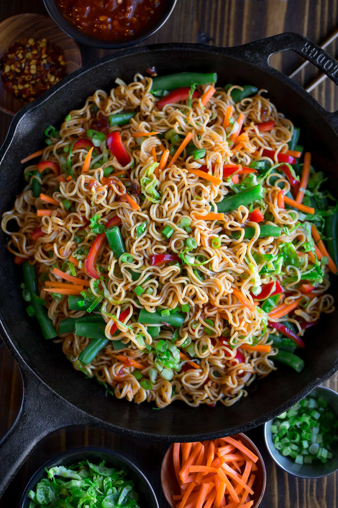

Stir Fry

A tasty stir fry for lunch
A standard Asian stir fry tailored to a vegan palate. But don't let that scare you!
The awesome thing about stir fries are that you can easily change out ingredients to
make it your own without messing it up. I like to get spicy with it but
adjust to your level of tolerance.
This recipe will make six individual meals. I meal prep everything in one go so that I have lunches ready for
cooking.
Ingredients
- 1 Bell Pepper each of Red, Yellow, Orange
- 1 Bunch of Radishes
- 1 Bag of Sugar Snap Peas
- 1-2 Heads of Broccolli
- 1 Bag of Brussel Sprouts
- Noodles/Spaghetti
- 1 container of tofu
- 2-3 TBSP Vegetable Oil
- 1-2 TSP Sriracha
- Soy Sauce
- Six containers
Steps
- Bring a pot of water to boil for the spaghetti/noodles.
- Wash veggies.
- Core peppers and cut each one into sixths.
- But up brocolli into sixths.
- Divide up the radishes, sugar snap peas, and brussel sprouts into six piles.
- Slice the rasishes and put evenly into the six containers.
- Halve the brussel sprouts and put evenly into the six containers.
- Slice the peppers and put evenly into the six containers.
- Divy up the sugar snap peas and broccolli evenly into the six containers.
- Add in your desired amount of noodles/spaghetti. Set timer for 14 minutes. Stir occasionally.
- Heat large pan on medium heat. Mix vegetable oil and Sriracha.
- Cut up your tofu into six chunks then cut them into squares or slices and divy them
evenly into the six containers.
- Pour the contents of one container into the pan. Set another timer for 10 minutes. Stir occasionally.
- Strain the noodle and add to your favorite bowl. Add stir fry to bowl.
- Add soy sauce to taste.
- Grab your chop sticks! Don't know how to use them? Watch this.